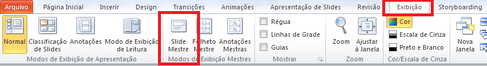
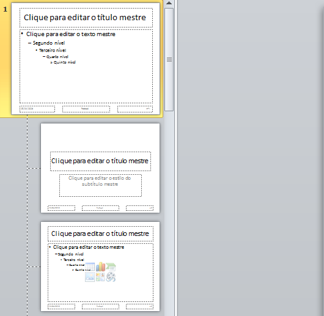

Outra ferramenta importante dentro do PowerPoint é o chamado Slide Mestre.
Sua função é ser um slide modelo em relação aos outros. Como assim?
Tudo o que for feito no Slide Mestre, quanto à estilização, vai ser diretamente adicionado aos demais slides.
Exemplo: se você colocar o título do slide mestre em negrito, sublinhado e verde, os demais títulos da sua apresentação ficarão com essa estilização automaticamente.
Como colocar um slide mestre? Simples: Na guia 'exibição', do seu PowerPoint, há o botão do Slide Mestre, conforme mostrado abaixo:
Perceba que, ao selecionar a opção, abrirá um slide maior (mestre), e diversos outros abaixo, conforme abaixo:
Então, qualquer tipo de estilização que você fizer no slide mestre, percorrerá toda sua apresentação!!